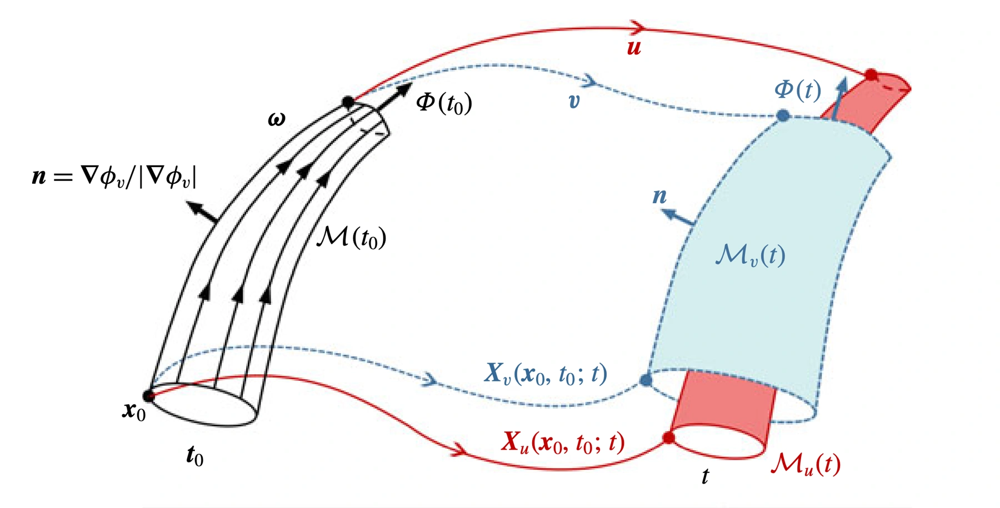

In an ideal fluid, vortex lines are carried by the flow. Helmholtz’s theorems say a vortex surface moves with the fluid, and Kelvin’s circulation theorem says circulation around a material loop is conserved. Together they make vortex surfaces well-defined objects that can be tracked for all time.
在理想流体中，涡线是被流动携带的。Helmholtz 定理说涡面随流体一起运动，Kelvin 环量定理说沿物质环路的环量守恒。两者合起来，使涡面成为定义良好、可以被全程追踪的对象。
Switch on viscosity and both statements fail in the same way and for the same reason: vorticity diffuses, and diffusion breaks the frozen-in property. The usual conclusion is that coherent vortex geometry stops being trackable in a non-ideal flow, and analysis moves to snapshot diagnostics such as Q or λ₂ that identify a vortex at an instant rather than follow one through time.
一旦打开黏性，这两个论断会以相同的方式、出于相同的原因失效：涡量发生扩散，而扩散破坏了冻结性质。通常的结论是：在非理想流动中，相干涡结构不再可追踪，分析于是转向 Q 或 λ₂ 这类快照式判据——它们在某一瞬间识别出一个涡，而不是在时间中跟随它。
This paper separates two questions that coincide only in the ideal case: how fluid particles move, and which velocity field, if any, preserves a vortex surface. They have the same answer under the classical assumptions and can have different answers once non-ideal terms act.
本文把两个只在理想情形下重合的问题分开：流体粒子如何运动，以及哪个速度场（如果存在的话）能保住涡面。在经典假设下两者答案相同；一旦非理想项起作用，它们可以有不同答案。
Two questions that coincide in ideal flow — how particles move and which velocity preserves a vortex surface — separate once viscosity or other non-ideal terms act. Material transport and vortex transport are not the same thing.
在理想流动中恰好重合的两个问题——粒子如何运动、以及哪个速度场能保住涡面——一旦黏性或其他非理想项起作用就分开了。物质输运与涡量输运并不是同一件事。
The classical theorems extend to some non-ideal flows when a globally smooth circulation-preserving virtual velocity exists; a vortex-surface field then tracks the surfaces under that velocity instead of the physical one.
当存在一个全局光滑且保持环量的虚拟速度时，经典定理可推广到某些非理想流动；涡面场随后在该速度场、而非物理速度场下追踪涡面。
Where no globally smooth solution exists, an approximate virtual velocity still improves tracking: in the MHD Taylor–Green flow it better preserves vorticity flux and removes spurious deformation attributable to the Lorentz force.
在不存在全局光滑解时，近似的虚拟速度仍能改善追踪：在 MHD Taylor–Green 流中，它更好地保持了涡通量，并消除了可归因于洛伦兹力的虚假变形。
Material surfaces and vortex surfaces物质面与涡面
A material surface is defined by the particles it contains, so it is transported by the physical velocity by definition. A vortex surface is defined by a relation to vorticity — it is everywhere tangent to the vorticity field — and nothing in that definition mentions velocity.
物质面由它所包含的粒子定义，因此按定义它被物理速度输运。涡面则由它与涡量的关系定义——它在处处与涡量场相切——而这个定义里完全没有提到速度。
The two coincide in ideal flow because circulation conservation forces vorticity to be transported as though frozen into the fluid. Once that conservation fails, the identification becomes an assumption rather than a consequence, and surfaces defined by vorticity need not move with the particles lying on them.
两者在理想流动中重合，是因为环量守恒迫使涡量像被冻结在流体中那样被输运。一旦这个守恒失效，这种等同就从结论退化为假设；由涡量定义的面，未必与位于其上的粒子一起运动。
That distinction is not pedantry. Vortex-surface tracking is used to study reconnection, helicity and the evolution of coherent structures — all questions about how a structure changes in time. If the tracking rule is wrong, an apparent topological change may be an artefact of the observer’s velocity field rather than of the flow.
这个区分不是学究式的讲究。涡面追踪被用于研究重联、螺旋度与相干结构的演化——这些都是关于结构如何随时间变化的问题。如果追踪规则是错的，那么一个看似发生的拓扑改变，可能只是观察者所选速度场的产物，而不是流动本身的产物。


A velocity chosen to preserve circulation一个为保持环量而被选出的速度
The virtual velocity is defined by what it has to conserve. It is a transport field chosen so that circulation — or the vorticity-flux relation standing in for it — is preserved along its flow. It is not an additional physical motion of the fluid.
虚拟速度由它必须守恒的东西来定义。它是一个被挑选出的输运场，使得环量——或替代它的涡通量关系——沿其流动保持不变。它不是流体的又一种物理运动。
Because it is not physical, there is no guarantee that it exists. The paper is explicit: the extension holds for non-ideal flows admitting a globally smooth circulation-preserving virtual velocity, and the construction is tested on a modified dissipative flow where an explicit one can be written down and exact tracking becomes checkable.
正因为它不是物理的，它并不保证存在。论文说得很明确：该推广适用于那些存在全局光滑、保持环量的虚拟速度的非理想流动；而这一构造在一个修正的耗散流中被检验——在那里可以写出显式解，使精确追踪成为可验证的。
That test case also prevents vortex-line reconnection, which is the right choice for validation. If reconnection occurs, a vortex surface genuinely changes topology and no tracking rule can preserve it; removing reconnection isolates whether the rule works from whether the structure is being torn.
这个检验算例还阻止了涡线重联，这对验证而言是正确的选择。若发生重联，涡面确实会改变拓扑，任何追踪规则都无法保住它；排除重联，就把“规则是否有效”与“结构是否正在被撕裂”这两个问题分离开了。
When no smooth solution exists当光滑解不存在时
The second setting is harder and more representative: a magnetohydrodynamic Taylor–Green flow, where a globally smooth circulation-preserving velocity is unavailable and an approximate construction has to be used instead.
第二个设定更难，也更有代表性：一个磁流体 Taylor–Green 流，其中不存在全局光滑且保持环量的速度，只能改用近似构造。
Comparing transport by physical and virtual velocities is the informative experiment. Where the two differ, the difference says which apparent changes in the surface come from the tracking rule and which come from the vorticity field itself — exactly the question the paper was set up to ask.
有信息量的实验是把物理速度与虚拟速度下的输运做对比。两者出现差异的地方，恰恰说明了涡面上哪些表观变化来自追踪规则、哪些来自涡量场本身——这正是本文被设计出来要问的问题。
In this flow the approximate virtual velocity better preserves vorticity flux and removes spurious deformation attributable to the Lorentz force. That is a specific and useful claim: some of the distortion an observer using the physical velocity would report in an MHD flow belongs to the observer, not to the flow.
在这个流动中，近似的虚拟速度更好地保持了涡通量，并消除了可归因于洛伦兹力的虚假变形。这是一个具体而有用的论断：在 MHD 流动中，观察者若使用物理速度，他所报告的一部分变形属于观察者自己，而不属于流动。
Changing coordinates without changing physics换坐标，而不是换物理
The contribution is a change in the coordinate system used to follow a structure, not a claim that non-ideal physics disappears. Viscosity still diffuses vorticity, and reconnection still occurs wherever it occurs.
这项贡献是更换了用于跟随结构的坐标系，而不是宣称非理想物理消失了。黏性依然在扩散涡量，重联依然在它该发生的地方发生。
What changes is attribution. A useful virtual transport can preserve a geometric description even when material transport cannot, so questions about vortex-surface evolution stay well-posed in flows where the classical theorems do not apply.
改变的是归因。一种有用的虚拟输运可以在物质输运做不到的时候仍然保住几何描述，于是关于涡面演化的问题，在经典定理不适用的流动中依然是适定的。
The boundary is existence and smoothness. Where a globally smooth virtual velocity exists the result is exact; where only an approximate one can be built it is an approximation, and the paper does not claim exact frozen-in tracking for arbitrary non-ideal flows. That condition, not the numerical evidence, decides whether the method applies to a given flow.
边界在于存在性与光滑性。存在全局光滑虚拟速度时结果是精确的；只能构造出近似解时它就是近似的——论文并未声称对任意非理想流动都能做到精确的冻结式追踪。决定该方法是否适用于某个流动的，是这个条件，而不是那些数值证据。
Paper & authors
Tracking vortex surfaces frozen in the virtual velocity in non-ideal flows
J. Fluid Mech.
Cite this work
@article{Hao_2019,
title = {Tracking vortex surfaces frozen in the virtual velocity in non-ideal flows},
volume = {863},
ISSN = {1469-7645},
url = {http://dx.doi.org/10.1017/jfm.2018.1014},
DOI = {10.1017/jfm.2018.1014},
journal = {Journal of Fluid Mechanics},
publisher = {Cambridge University Press (CUP)},
author = {Hao, Jinhua
and Xiong, Shiying
and Yang, Yue},
year = {2019},
month = Jan,
pages = {513–544}
}